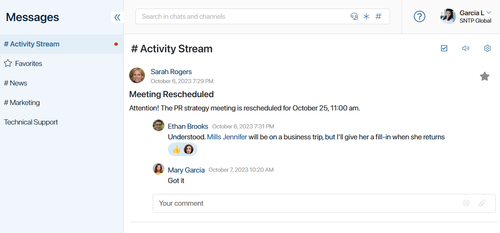
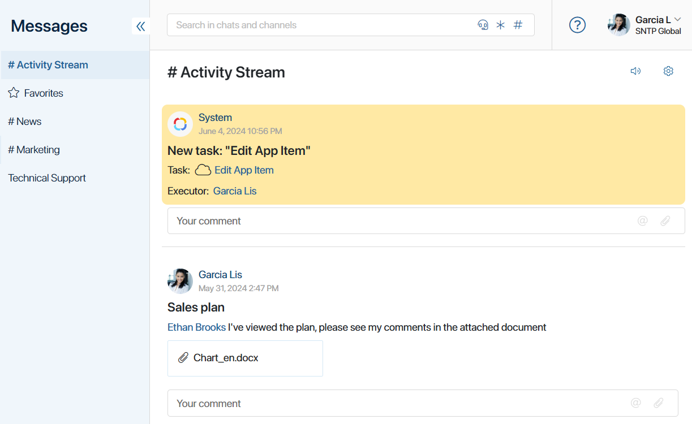
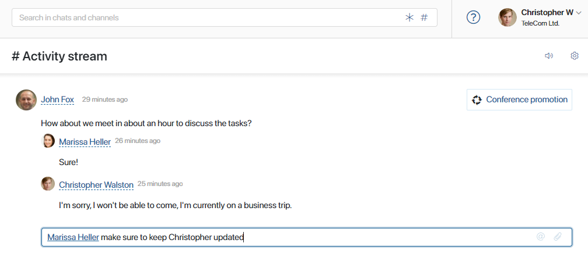
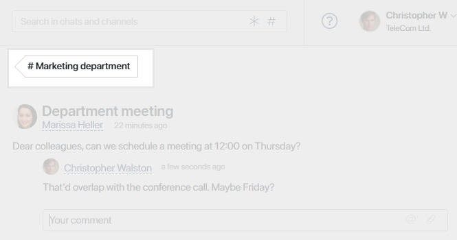
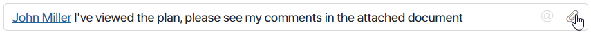
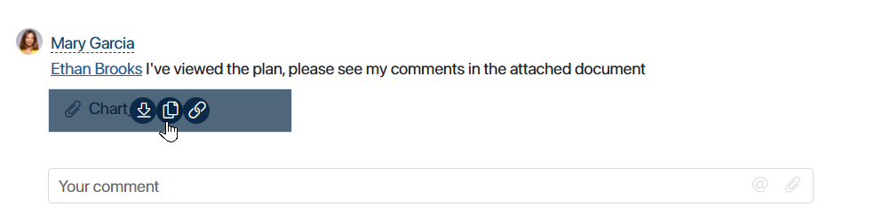
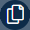
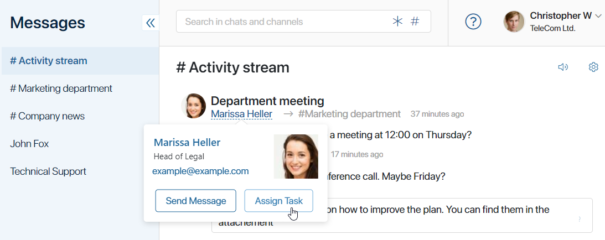

The #Activity stream is a tool that allows employees to share all relevant information promptly. It enables internal communications in the company in a familiar and convenient way.
Here, you’ll find the latest updates from the information channels you participate in, as well as system notifications. In the #Activity stream, you can view messages, comment on updates, leave reactions to them, share files, and assign tasks to other users.

In BRIX, two modes are available for displaying the #Activity stream:
- Standard mode. All messages and notifications related to app items, tasks, and files are gathered in a common #Activity stream. They are displayed in chronological order, from newest to oldest.
- Object-based activity stream. Messages are grouped into three tabs: chats, objects, and favorites. You can view all correspondence and notifications for each specific object directly in the Messages workspace.
This article describes working with the #Activity stream in standard mode. For information on working with the object activity stream, see Object-based activity stream.
How to work with the #Activity stream
The #Activity stream is the first thing you encounter when you open the Messages workspace. All unread posts in the #Activity stream are highlighted in yellow. Apart from posts by users, system notifications are also presented here. These notifications are auto-generated, for example, when a task is completed or reassigned, when working with documents, or when a business process is started.
The unread news and posts with new comments are always displayed at the top of the #Activity stream. This allows you to stay up-to-date and receive important information on time. Viewed posts are arranged chronologically, from newest to oldest.
You can:
- See all the latest news by clicking the Show more button, or see all received messages and notifications by clicking Show All Messages. If you have unread posts, they will be automatically marked as read.
- Add a post to the Favorites for future reference. To do so, click the star icon next to the post.
- React to a post or comment. Right-click on the entry and pick an emoji.
- Mark all the messages in the #Activity stream as read by clicking
 .
. - Disable pop-ups about new messages in the activity stream. To do that, click the speaker icon in the top right corner. You can also configure pop-up notifications in the user profile.
- Go to channel settings by clicking the gear icon.

To avoid overloading the #Activity stream with information about process launches, the administrator can disable notifications about them.
Comments in the #Activity stream
You can comment on posts within the #Activity stream and share important information with your colleagues. Your replies will appear in their #Activity streams and the related channels.

Within the #Activity stream, only the most recent comments on a post will be visible. To view the full thread, simply click on the post’s subject. The tag in the upper left will guide you to the channel of the discussion.

Mentions in comments
Use the @mention function to draw someone’s attention to important posts. To mention someone, start typing the @ character, and a list of all users will appear. Type the first few letters of their name and select the desired colleague from the list.
The mentioned user will receive a pop-up notification about the new comment, even if they’ve turned off notifications for that channel.
In the post, the mentioned colleague’s first and last name will appear as a link. By clicking on this link, any participant in the discussion can send them a direct message or assign a task.
Additionally, you can use the @all option to mention all the participants of a channel. As a result, all colleagues will receive a pop-up notification about the message.
Share files
When adding a comment in the #activity stream, you can share files in different formats. To do this:
- Drag and drop one or more files from a folder on your computer into the comment input field.
- Click the paperclip icon in the right corner of the field and select the desired file in the window that opens. To add additional files, click the paperclip icon again in the upload window.

The attached file will be displayed next to your comment.

Hover over the file to choose from the available actions:
- Download the file to your computer.
-  Select a folder from the Files workspace and save a copy of the document there.
- Copy the link to download the file.
- Click on the blue area to open the file in view mode.
Tasks in the #Activity stream
You can quickly assign a task to another user from the #Activity stream.

Read more about it in Create a new task.
Found a typo? Select it and press Ctrl+Enter to send us feedback